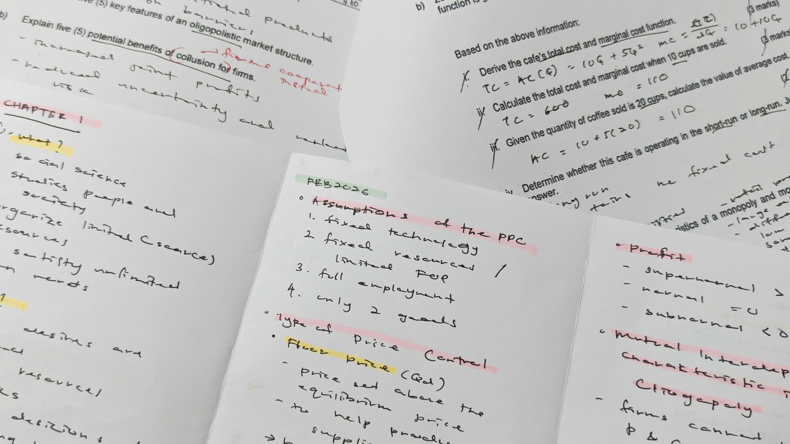
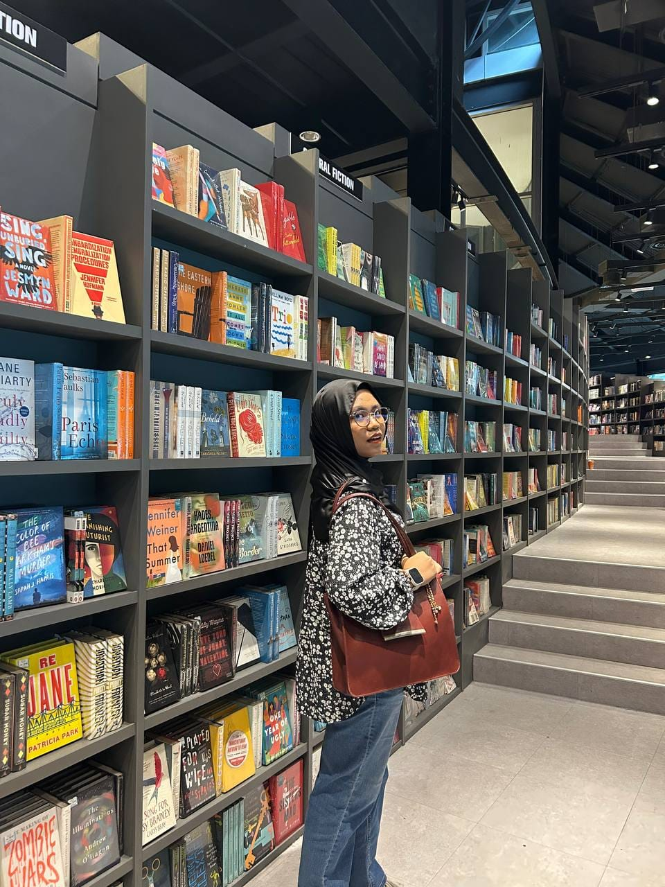
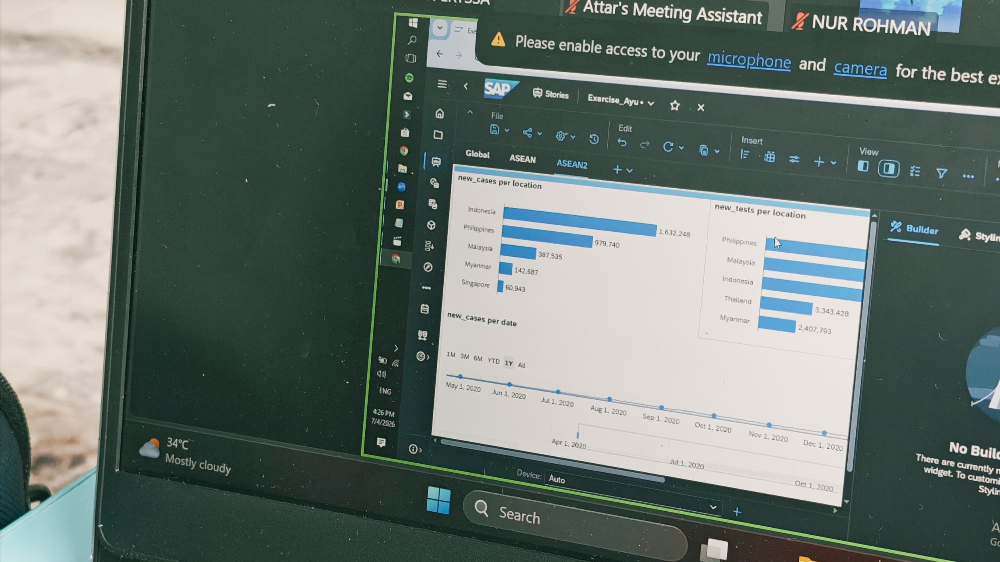
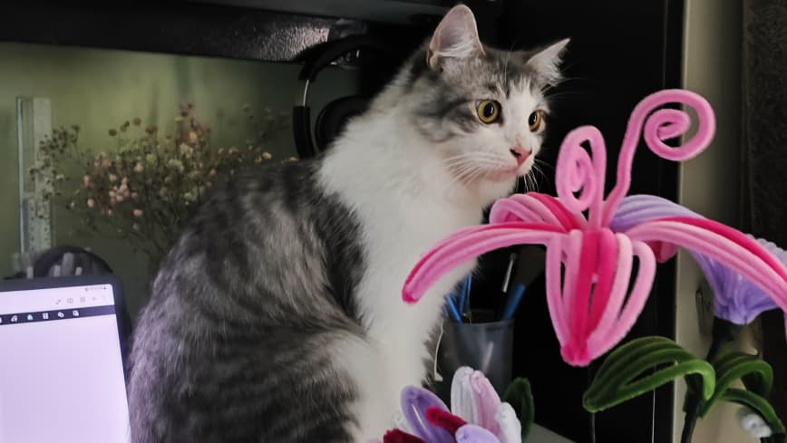
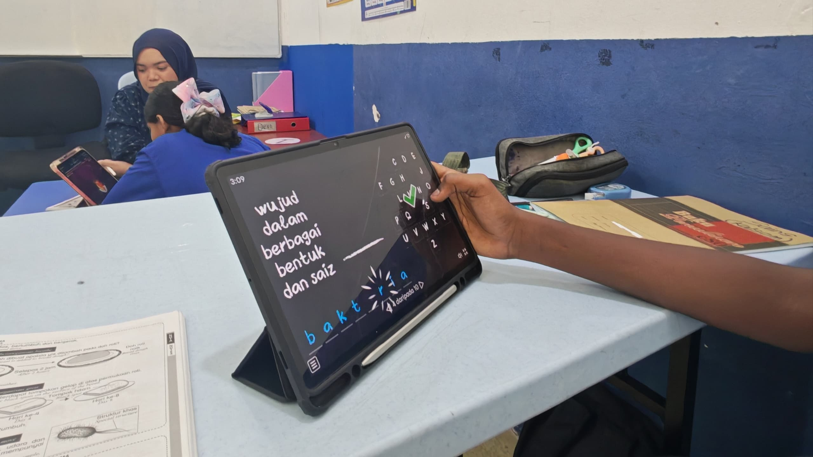
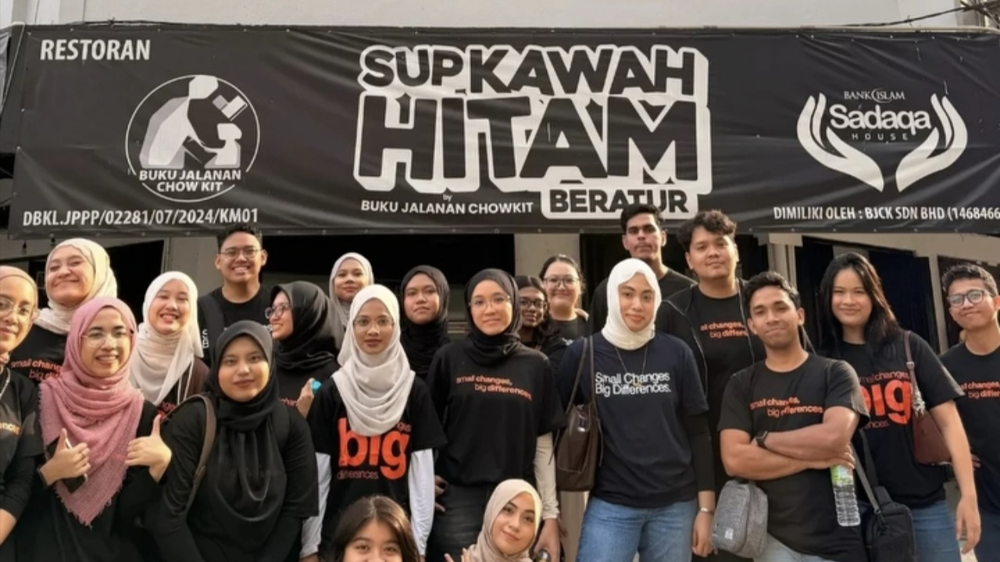

Actuarial Science Student
An Actuarial Science student with a love for mathematics, problem solving, and analytical thinking.
Actuarial science · data · innovation
Exploring the intersection of actuarial science, analytics, artificial intelligence, business intelligence and technology through projects, leadership and continuous learning.
📍 Puchong, Selangor, Malaysia
🎓 UiTM Shah Alam| Bachelor of
Actuarial Science (Hons.)




Currently
I am currently pursuing a Bachelor of Actuarial Science (Hons.) at UiTM Shah Alam where I am strengthening my foundation in actuarial studies, probability, statistics, financial mathematics and risk management. Alongside my degree, I am developing practical capability in Excel, Power BI, SQL, Python and data storytelling, while exploring AI-assisted development and technology-enabled business solutions. Beyond the classroom, I take on leadership, event management and volunteering roles that strengthen how I communicate, organise work and contribute within diverse teams.
A few things about me

An Actuarial Science student with a love for mathematics, problem solving, and analytical thinking.

Plays the flute occasionally as a brass band member at UiTM Shah Alam.

Exploring AI-assisted development through hands on projects.

A creative at heart with skils ranging from cooking and crocheting to making faux flowers, DIY bracelets and keychains.

Enjoy volunteering as a tutor and mentor, helping others understand something they once found difficult.

Always seeking opportunities beyond UiTM through competitions, camps, volunteering, and external programmes.
Skills
Microsoft Excel, Power Query, Power BI, Tableau, SAP Analytics Cloud.


Python, R, JavaScript, TypeScript, C++, HTML, CSS, React and Node.js.


Statistical modelling, financial mathematics, risk management, ALM, insurance and IFRS 17.
AutoCount Cloud.
MySQL, PostgreSQL, Supabase, Git/GitHub and cloud fundamentals.


Innovation
Technical and entrepreneurial concepts spanning fintech, environmental technology and circular design.
Fintech concept
Secure, contactless payment using iris-recognition authentication.
Fintech Authentication Open case study →Environmental technology
An IoT-enabled waterway clean-up and monitoring solution.
IoT Sustainability Open case study →Circular design
An Arduino-enabled concept for converting waste paper into seed paper.
Automation Circular economy Open case study →Business intelligence & data analytics
Analytical work that connects structured data, visual storytelling and practical business decisions.
Power BI dashboards that turn operational data into clear, decision-ready views.
Power BI Visualisation Open case study →Excel, Power Query and SQL workflows for cleaning, shaping and organising reliable datasets.
Excel SQL Open case study →Regression, modelling and data storytelling that support evidence-based business analysis.
Statistics Data storytelling Open case study →Web development
Frontend and full-stack foundations for responsive, data-aware and user-focused web products.
Responsive interfaces built with HTML, CSS, JavaScript, React and TypeScript.
React TypeScript Open case study →Application development across APIs, Node.js, databases and practical product workflows.
APIs Node.js Open case study →Git/GitHub, PostgreSQL, Supabase and cloud fundamentals for developing and maintaining modern web projects.
Git/GitHub Cloud Open case study →Certifications & Digital Credentials
A record of completed qualifications, digital credentials and ongoing learning across analytics, technology, finance and risk.
SAS Certified Statistical Business Analyst Using SAS 9; AI+ Security Level 1; Takaful Basic Examination; Lean Six Sigma White Belt.
Source ↗EY–Microsoft AI Skills Passport; AWS Cloud Essentials; SAS SQL Essentials; Foundations of Risk and ALM; Foundations of Insurance and IFRS 17.
Source ↗SOA Exam P and FIMM Combined Examination, expected 2027.
Source ↗Courses - Professional Development
Focused learning across analytics, statistics, cloud tools and modern development workflows.
August 2026
Excel, Power Query, Power BI, DAX and data visualisation.
Proof image: upload pending
August 2026
SQL, regression and statistical business analysis.
Proof image: upload pending
August 2026
AWS, Git/GitHub and AI-enabled full-stack development.
Proof image: upload pending
Let’s connect